The party had won over many educated people, but it did not trust them.
Sources: Ebrey, Ch. 27, pp. 476–479.
Segment 1 of 3 · 1956–1957
A Hundred Flowers
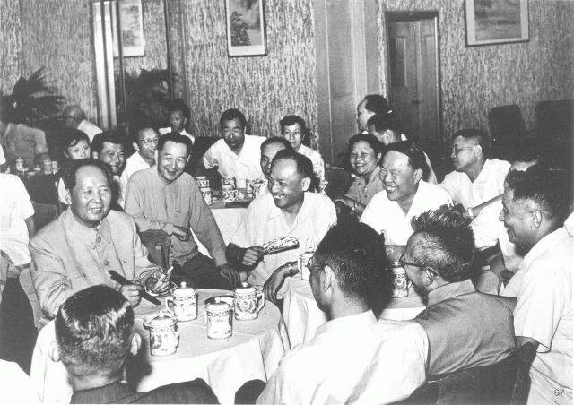
Mao meets Shanghai scientists, teachers, writers, and businesspeople, 7 July 1957, as the campaign against “rightists” was under way. Public domain, Wikimedia Commons.
Mao invited intellectuals to criticize the party, and then punished the critics.
This segment teaches the history behind Review Question 6, and it ends with a short self-check and then the question itself.
Q6 concept · Universities and offices · 1950–1955
Concept: Intellectuals Had Already Been “Reformed” Once
Concept
Thought reform
Study meetings in which educated people confessed their old “bourgeois” ideas and thanked the party and Chairman Mao for correcting them.
Most educated people welcomed the new government, and the state kept them in their jobs.
In the early 1950s teachers, editors, and scientists had to confess and be “reeducated.”
There were no more private colleges or independent presses: the state was the only employer.
Sources: Ebrey, Ch. 27, pp. 479–480.
Q6 story · Moscow and Beijing · 1956
Khrushchev Denounced Stalin, and Mao Invited a Hundred Flowers to Bloom
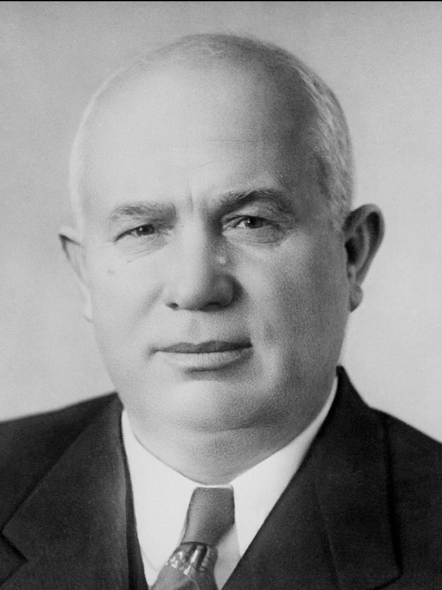
Nikita Khrushchev, leader of the Soviet Communist Party, in an official portrait of 1956. Public domain, Wikimedia Commons.
In February 1956 Khrushchev’s “secret speech” told the Soviet party of Stalin’s crimes.
In the fall, Hungarians rose against their communist government, and Soviet tanks crushed them.
Mao asked intellectuals to help find party members who had become bullies or lost touch.
“Let a hundred flowers bloom” in culture, and “a hundred schools of thought contend” in science.
Names to know
Nikita KhrushchevSoviet leader after Stalin, 1953–1964
Deng Xiaopingparty general secretary from 1956
Peng Dehuaidefense minister, hero of Korea
Sources: Ebrey, Ch. 27, p. 480; Roderick MacFarquhar, The Origins of the Cultural Revolution, vol. 1 (1974).
Q6 story · Beijing campuses · May 1957
In the Spring of 1957 Students and Professors Spoke Up
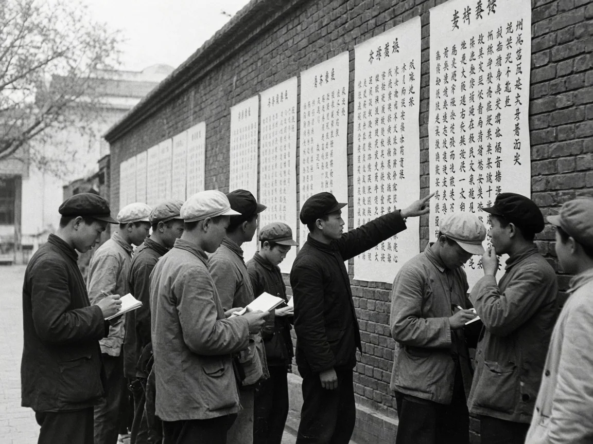
AI-generated illustration made for this deck: students read and copy wall posters on a Beijing campus in May 1957. An interpretation, not a historical source.
Scientists and engineers spoke first: they wanted party members to stop meddling in their work.
Mao praised the critics, and others lost their fear.
By May students were putting up wall posters, some with fierce charges.
When he wants to kill you, he doesn’t have to do it himself. He can mobilize your wife and children to denounce you and then kill you with their own hands! Is this a rational society? This is class struggle, Mao Zedong style!
Wall poster at Qinghua University, Beijing, May 1957 (Ebrey, p. 480)
Sources: Ebrey, Ch. 27, p. 480; Gregor Benton and Alan Hunter, eds., Wild Lily, Prairie Fire (1995).
Q6 story · Every work unit · 1957–1979
In June 1957 Deng Xiaoping Turned the Campaign Against the Critics
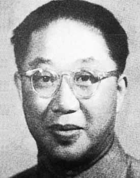
Luo Longji, a leader of the China Democratic League and a government minister, labeled a “rightist” in 1957. Public domain, Wikimedia Commons.
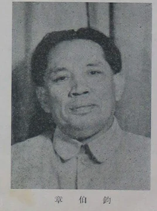
Zhang Bojun, minister of communications and Democratic League leader, the most famous “rightist” of 1957. Public domain, Wikimedia Commons.
Every unit was pressed to name 5 percent of its staff as rightists.
Officially about 550,000 people were labeled; historians think the real number was much higher.
Many lost their influence at work, and hundreds of thousands were sent to labor in the countryside.
Most had to wait until 1979 to have the label removed.
Sources: Ebrey, Ch. 27, p. 480; Yen-lin Chung, “The Witch-Hunting Vanguard,” China Quarterly 206 (2011).
Self-check · Segment 1 · not graded
Quick Check: A Hundred Flowers
Answer each question from memory, out loud or on paper, then click Show answer to check yourself. Nothing here is graded or recorded.
1. What happened in Moscow in February 1956 that pushed Mao to invite criticism?
Khrushchev’s “secret speech” denounced Stalin’s crimes, starting de-Stalinization in the communist world.
2. What did intellectuals have to do in “thought reform” in the early 1950s?
Confess their old “bourgeois” ideas and their service to capitalists and imperialists, and thank the party for correcting them.
3. Who ran the Anti-Rightist Campaign, and what quota did units receive?
Deng Xiaoping, the party’s general secretary; units were pressed to name 5 percent of their staff as rightists.
Commune members work through the night by lamplight in Xinyang, Henan, 1959. Public domain, Wikimedia Commons.
Mao set out to make China rich in a few years, and his plan ended in one of the worst famines in history.
This segment teaches the history behind Review Question 7, and it ends with a short self-check and then the question itself.
Q7 story · Moscow and Beijing · 1957–1958
Mao Promised to Surpass Britain in Fifteen Years
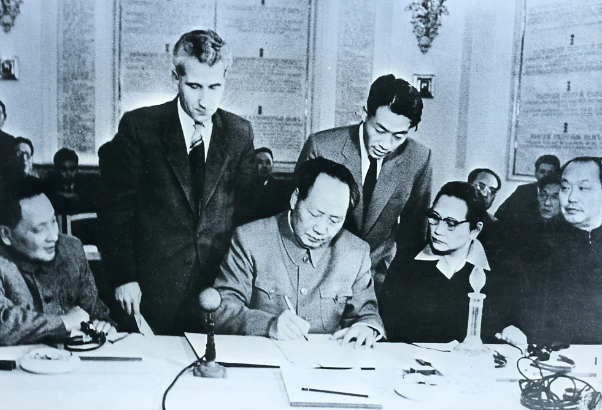
Mao signs the declaration of the world’s communist parties in Moscow, November 1957, with Soong Qingling and Deng Xiaoping beside him. Public domain, Wikimedia Commons.
In Moscow in November 1957 Mao promised that China would pass Britain’s industry within fifteen years.
China was poor in machines and money but rich in people: their labor would be the engine.
Experts who urged caution had just been silenced as “rightists.”
In May 1958 the party launched the Great Leap Forward.
Sources: Ebrey, Ch. 27, p. 480; Frank Dikötter, Mao’s Great Famine (2010).
Q7 story · Every village · 1958
Collectives Were Merged into Giant Communes with Free Mess Halls
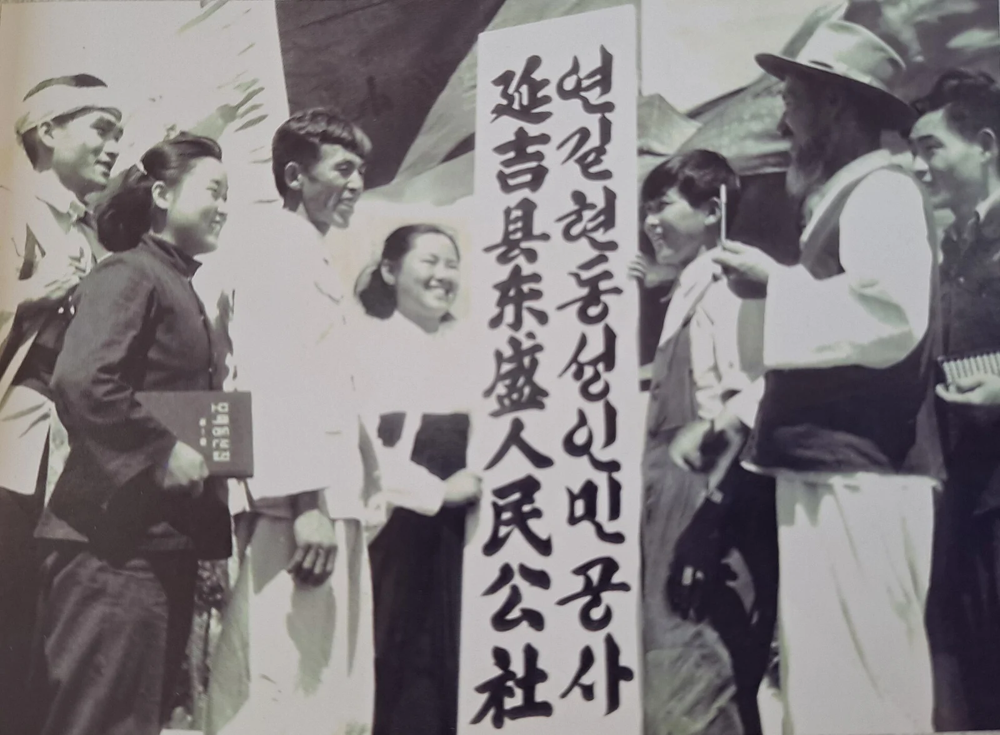
Villagers celebrate the founding of the first commune in Yanbian, Jilin, August 1958. Public domain, Wikimedia Commons.
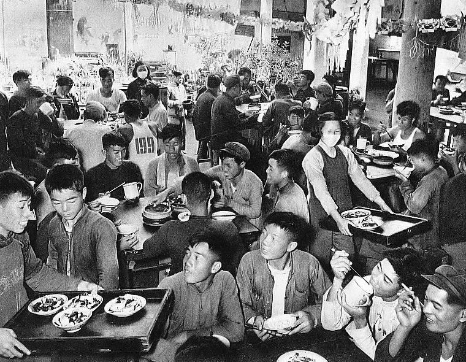
A commune mess hall, 1959. Meals were free, so people ate their fill, and the grain ran out. Public domain, Wikimedia Commons.
In a few months of 1958 the collectives were merged into about 26,000 communes.
Private garden plots were banned, and peasants were organized like soldiers.
Free mess halls replaced family kitchens, a “step toward communism.”
Men marched off to dig canals and dams, and women took over much of the field work.
Sources: Ebrey, Ch. 27, p. 481.
Q7 story · Villages, schools, and factories · Fall 1958
Backyard Furnaces Turned Pots and Pans into Useless Iron
In the late summer of 1958 Mao set out to double China’s steel output in a single year.
Communes, schools, and offices built small furnaces, and people melted down pots and tools.
Most of the iron was too poor to use; it clogged railroad yards across the country.
Farmers at the furnaces left the harvest to rot in the fields.
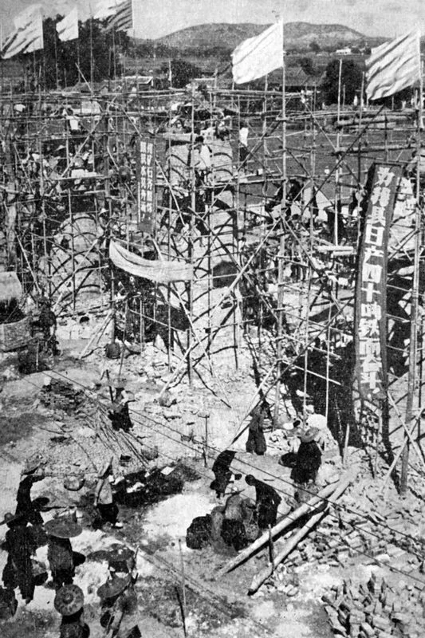
A backyard furnace and its crowd of workers, 1958. Most of the iron it made was too poor to use. Public domain, Wikimedia Commons.
Sources: Ebrey, Ch. 27, pp. 481–482.
Q7 story · Counties and provinces · 1958
Afraid to Disappoint Mao, Cadres Reported Harvests That Did Not Exist
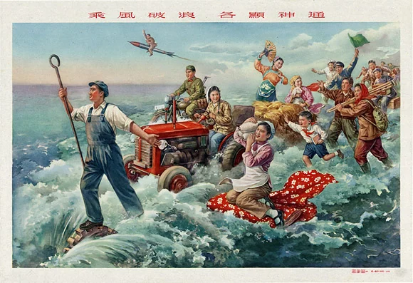
A Great Leap poster of 1958, “Brave the wind and the waves,” promising impossible abundance. Public domain, Wikimedia Commons.
Counties claimed harvests up 1,000 and even 10,000 percent.
The party announced that grain output had nearly doubled in one year.
Plans were made by local cadres eager to show zeal, not by experts.
After the Anti-Rightist Campaign, no one wanted to report failure.
Sources: Ebrey, Ch. 27, pp. 481–482.
Q7 story · Mount Lu, Jiangxi · July 1959
Peng Dehuai Warned Mao at Lushan, and Mao Purged Him
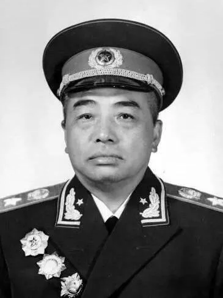
Marshal Peng Dehuai, defense minister and commander in Korea, 1955. Public domain, Wikimedia Commons.The hall on Mount Lu (Lushan) where the party leaders met in 1959. Photo: Pauloleong2002, 2007, CC BY-SA 4.0, Wikimedia Commons.
At a party meeting in July 1959, Peng gave Mao a private letter about the Leap’s problems.
He praised the Leap, then warned of exaggeration at every level and of the free meals.
Mao circulated the letter, called it “right opportunism,” and made the leaders choose between them.
No one sided with Peng. He was dismissed, and the Leap went on.
Sources: Ebrey, Ch. 27, p. 482; Li Rui, Lushan huiyi shilu (1989).
Q7 story · All of China · 1959–1961
Grain Output Fell by More Than a Quarter, and About 30 Million People Died
The state took grain based on the false harvest reports, leaving villages too little to eat.
Peasants were not allowed to take to the roads to beg, as in past famines.
In 1960–1962 the leaders retreated: mess halls closed and grain was imported.
Grain output, million tons (Ebrey, p. 482)
1958200
1959170
1960144
~30 million
“excess” deaths in the famine years, from later census reconstructions (Ebrey, p. 482)
Sources: Ebrey, Ch. 27, p. 482.
Self-check · Segment 2 · not graded
Quick Check: The Leap and the Famine
Answer each question from memory, out loud or on paper, then click Show answer to check yourself. Nothing here is graded or recorded.
1. Whom did Mao promise China would surpass in fifteen years, and what would make it possible?
Britain, in industrial output; the hard work of hundreds of millions of people would replace machines and money.
2. Name two features of the communes of 1958.
Any two of: collectives merged into giant units, private plots banned, military-style brigades, free mess halls, men sent to public works while women farmed.
3. What did Peng Dehuai warn Mao about at Lushan in 1959?
Exaggeration at every level, which hid the real situation, and the false belief that the food problem was solved.
4. How did grain output change from 1958 to 1960?
It fell from 200 million tons to 170 million in 1959 and 144 million in 1960.
Mao arrives in the Soviet Union, November 1957, his last trip abroad. Public domain, Wikimedia Commons.
China’s alliance with the Soviet Union, the center of its foreign policy since 1950, fell apart in a few years.
This segment teaches the history behind Review Question 9, and it ends with a short self-check and then the question itself.
Q9 story · Beijing · 1958–1959
Mao Shelled Taiwan’s Islands and Khrushchev Decided Mao Was Reckless
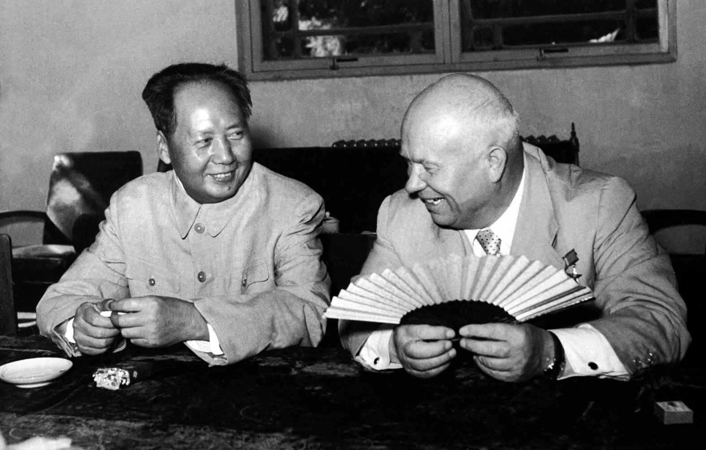
Mao and Khrushchev during the Soviet leader’s visit to Beijing, summer 1958. Public domain, Wikimedia Commons.
Mao respected Stalin but never Khrushchev, and he resented the attack on Stalin.
In August 1958 China shelled the islands near Fujian held by Taiwan; Moscow feared a war with America.
Khrushchev called the communes foolish, and Mao made light of nuclear war.
In 1959 Moscow took back its promise to help China build an atomic bomb, and would not side with China against India.
Sources: Ebrey, Ch. 27, p. 483; Lorenz M. Lüthi, The Sino-Soviet Split (2008).
Q9 story · Factories and building sites · July 1960
In July 1960 Moscow Called Home Its Experts and Their Blueprints
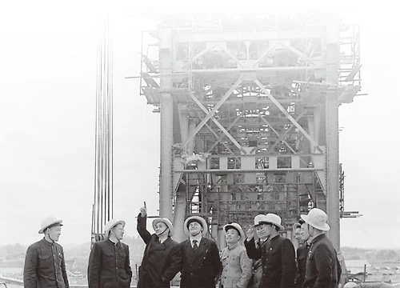
Chinese and Soviet engineers on the Wuhan Yangtze River Bridge, 1957. The Soviet team leader, Konstantin Silin, is third from left. Public domain, Wikimedia Commons.
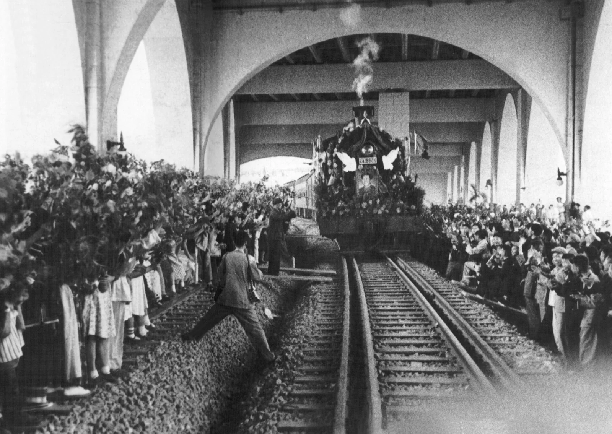
The Wuhan bridge, the first across the Yangzi, opens on 15 October 1957. Public domain, Wikimedia Commons.
Since 1950 thousands of Soviet experts had helped build China’s factories, mines, and bridges.
In April 1960, on Lenin’s ninetieth birthday, Chinese leaders attacked Soviet foreign policy in print.
In July Khrushchev ordered the experts home, “to take their blueprints and spare parts with them.”
Hundreds of projects stopped half-built, just as the famine struck.
Sources: Ebrey, Ch. 27, p. 483; Shen Zhihua, A Short History of Sino-Soviet Relations (2020).
Q9 story · The communist world · 1963–1969
By 1963 Each Side Called the Other a Traitor to Marxism
Mao denounced Khrushchev as a revisionist and a “capitalist roader.”
China challenged Moscow’s leadership, and communist parties everywhere split into pro-Soviet and pro-China camps.
Both sides moved troops to their long border, and clashes followed.
When the Vietnam War grew, China did not help Moscow supply Hanoi, but it sent about 320,000 of its own support troops in 1965–1969.
1956Khrushchev attacks Stalin
1958–59Quarrels over Taiwan, communes, India, and the bomb
1960Experts recalled
1963Open war of words
Sources: Ebrey, Ch. 27, p. 483; Chen Jian, “China’s Involvement in the Vietnam War, 1964–69,” China Quarterly 142 (1995).
Q9 story · Lop Nur, Xinjiang · 16 October 1964
China Exploded Its Own Atomic Bomb in 1964
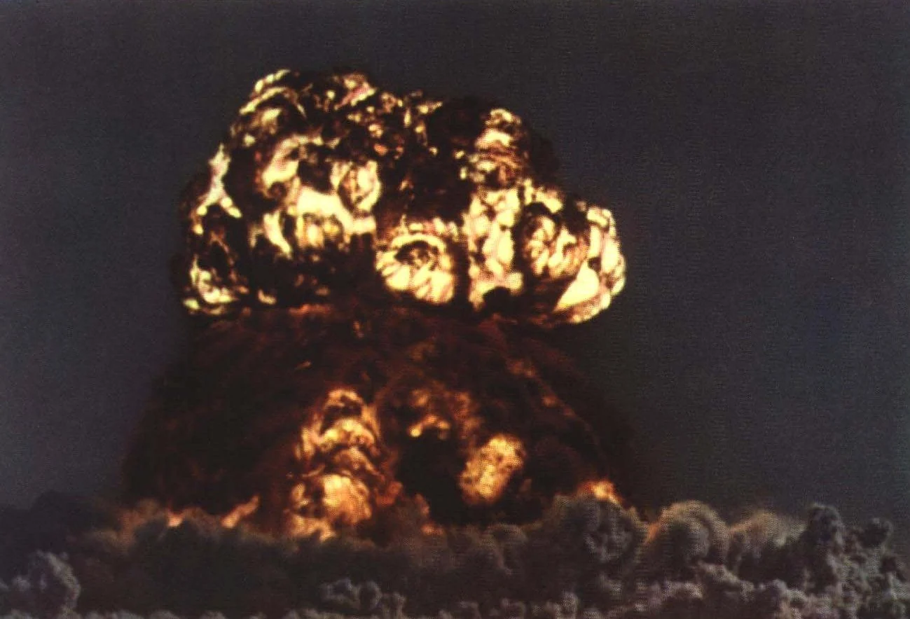
China’s first atomic test at Lop Nur, Xinjiang, 16 October 1964. Public domain, Wikimedia Commons.
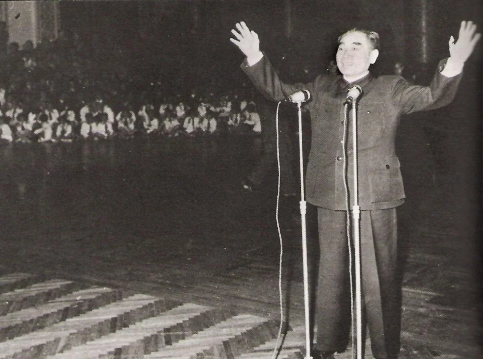
Zhou Enlai tells the cast of the pageant The East Is Red that the test has succeeded, 16 October 1964. Public domain, Wikimedia Commons.
Without Soviet help, Chinese scientists built a bomb on their own.
Its code name, “596,” recalled June 1959, the month Moscow broke its promise.
China also dug air-raid shelters and moved defense factories deep inland.
China now stood alone, against both superpowers.
Sources: Ebrey, Ch. 27, p. 483; John W. Lewis and Xue Litai, China Builds the Bomb (1988).
Self-check · Segment 3 · not graded
Quick Check: Breaking with Moscow
Answer each question from memory, out loud or on paper, then click Show answer to check yourself. Nothing here is graded or recorded.
1. Why did the shelling of the islands off Fujian in 1958 worry Moscow?
The Russians feared China would drag them into a war with the United States.
2. What promise did Khrushchev take back in 1959?
His promise to help China get nuclear weapons.
3. What happened in July 1960?
Khrushchev recalled the Soviet experts, with their blueprints and spare parts, just as the famine hit.
4. What did Mao call Khrushchev by 1963?
A “revisionist” and a “capitalist roader,” a false communist leading the way back to capitalism.
Liu Shaoqi, Mao, and the American writer Edgar Snow, Beijing, October 1960. After the famine, Liu ran the state and Mao felt pushed aside. Public domain, Wikimedia Commons.
By 1962 the Leap was over, and Liu Shaoqi and Deng Xiaoping were repairing the damage.
Mao feared that “revisionists” like Khrushchev were now inside his own party.
In 1966 he called on students to rebel against them.
Today's lecture ends here. Continue on your own: the stories below finish this chapter's history, and one of them ends with a review question to answer.
"A little learning is a dang'rous thing; Drink deep, or taste not the Pierian spring."Alexander Pope, An Essay on Criticism, 1711
PS · Q8 story · Cities and villages · 1955–1963
Household Registration Tied Peasants to the Villages Where They Were Born
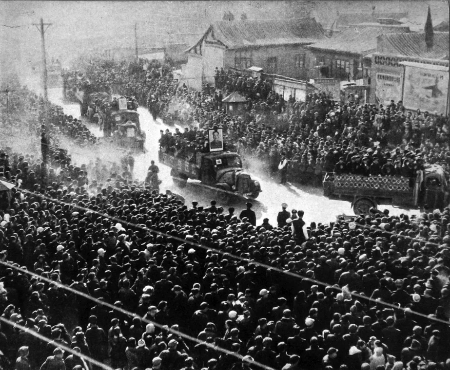
Crowds see off city officials sent to work in the countryside, July 1957. In 1961–1963 some 20 million city people were sent back to the villages. Public domain, Wikimedia Commons.
From 1955 every person was registered by hukou as rural or urban, tied to a birthplace or, for a wife, her husband’s village.
Regulations of 1958 made it law: only legal city residents got the ration coupons to buy grain in town.
When the Leap collapsed, millions of new workers were sent back to the villages.
The registration kept them, and other peasants, from coming back.
Sources: Ebrey, Ch. 27, p. 483; Tiejun Cheng and Mark Selden, “The Origins and Social Consequences of China’s Hukou System,” China Quarterly 139 (1994).
PS · Q8 story · City and countryside · 1958–1980s
City People Got Rations, Pensions, and Schools; Villagers Got the Hoe
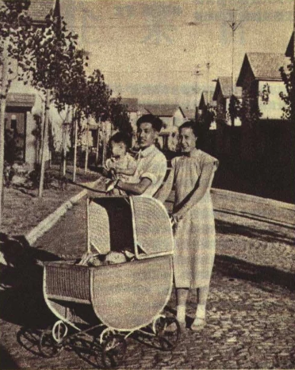
Families at Caoyang New Village, new housing for Shanghai factory workers, 1952. Public domain, Wikimedia Commons.
State factory workers had cheap housing, pensions, health care, and subsidized food.
City children stayed in school through middle school, and the brightest went further.
Villagers were made to grow grain and could only add more labor: weeding, terracing, digging ditches.
In the poorest places, the rules locked families into poverty.
Sources: Ebrey, Ch. 27, p. 483; Jeremy Brown, City Versus Countryside in Mao’s China (2012).
Self-check · Pierian Spring · Part 1 · not graded
Quick Check: City and Village
Answer each question from memory, out loud or on paper, then click Show answer to check yourself. Nothing here is graded or recorded.
1. From what year were rural people bound to the villages of their birth?
From 1955, made law by the household registration regulations of 1958.
2. Why could a villager not simply move to a city and buy food there?
Only registered city residents got the ration coupons needed to buy grain in town.
3. Who was sent back to the villages after the Leap, and about how many?
Peasants who had become city workers during the Leap; some 20 million people in 1961–1963.
4. Name two benefits of a state factory job.
Any two of: low-cost housing, pensions, health care, subsidized food, and schooling for children.
Patricia Buckley Ebrey, A History of China, Chapter 27, "China Under Mao (1949–1976)," pp. 479–483. All page references in this deck are to these pages.
Further reading
Flowers and rightists: Roderick MacFarquhar, The Origins of the Cultural Revolution, vol. 1 (1974). Gregor Benton and Alan Hunter, eds., Wild Lily, Prairie Fire (1995). Yen-lin Chung, "The Witch-Hunting Vanguard," China Quarterly 206 (2011).
The Leap and the famine: Frank Dikötter, Mao's Great Famine (2010). Yang Jisheng, Tombstone (2012). Li Rui, Lushan huiyi shilu (1989).
The split: Lorenz M. Lüthi, The Sino-Soviet Split (2008). Shen Zhihua, A Short History of Sino-Soviet Relations (2020). Chen Jian, "China's Involvement in the Vietnam War, 1964–69," China Quarterly 142 (1995). John W. Lewis and Xue Litai, China Builds the Bomb (1988).
City and village: Tiejun Cheng and Mark Selden, "The Origins and Social Consequences of China's Hukou System," China Quarterly 139 (1994). Jeremy Brown, City Versus Countryside in Mao's China (2012).
The Third Front: Covell F. Meyskens, Mao's Third Front (2020). Barry Naughton, "The Third Front," China Quarterly 115 (1988).
Images (real, via Wikimedia Commons)
All photographs and the 1958 poster are historical and public domain, except the 2007 photograph of the Lushan hall (Pauloleong2002, CC BY-SA 4.0). Each caption links its Commons page. The famine chart and table are built from Ebrey's figures.
AI-generated illustration
g: students read wall posters on a Beijing campus, May 1957. An AI-generated illustration made for this deck, not a historical source.
A teal dotted word opens a short definition like this one.
Close it with Esc, the × mark, or a click outside the card.
×
Rightist
A rightist was someone the party labeled an enemy of socialism in the 1957 campaign. The label cost people their posts and often sent them to labor camps, and it marked their families for twenty years.
×
Commune
A people’s commune was a giant unit formed in 1958 by merging many collectives. It ran farming, industry, schools, the militia, and local government, often for tens of thousands of people.
×
Revisionist
A revisionist, in Mao’s use, was a communist who “revised” Marx and Lenin to make peace with capitalism. Mao applied it first to Khrushchev and later to his own party colleagues.
×
Hukou
Hukou (hoo-koh) is household registration. Each person was registered as urban or rural, and only urban residents could get city jobs, housing, and grain rations.